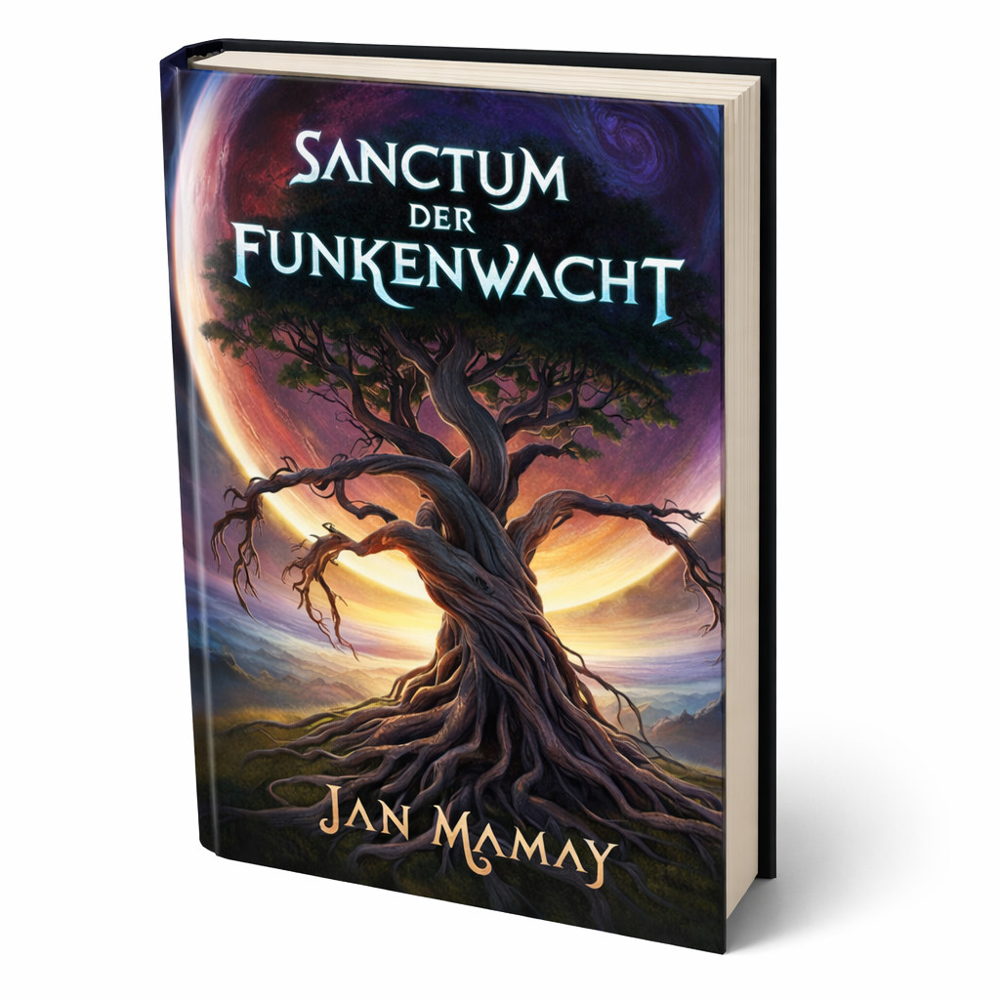

Das Sanctum der Funkenwacht
Ein Magier,der alles riskiert, um das Gleichgewicht zwischen Licht und Dunkelheit zu bewahren.
Kurzgeschichtensammlung · Work in progress
Ein uralter Schwur. Ein Licht, das nicht erlöschen darf. Und eine Wacht, die zwischen Hoffnung und Brand steht.
Diese Seite zeigt Einblicke in ein entstehendes Buchprojekt.

Das Sanctum der Funkenwacht und viele weitere Geschichten erzählen von einer Welt, in der Magie
und Geheimnisse allgegenwärtig sind.
Begleite mutige Wächter, entdecke uralte Rituale und erlebe die Spannung zwischen Licht und
Schatten.
Ein Magier,der alles riskiert, um das Gleichgewicht zwischen Licht und Dunkelheit zu bewahren.
Ein Mord führt zum Zerbrechen einer Familie – und enthüllt dunkle Geheimnisse.
Ein Bauernjunge gibt seinen größten Traum nicht auf – und wird zum Helden.
Das Projekt ist in Arbeit. Auf der SneakPeak-Seite findest du einen kurzen Auszug, bei den Charakteren erste Entwürfe zu wichtigen Figuren.